import numpy as np
import pandas as pd
import datetime as dt
from pylab import mpl, plt
plt.style.use('seaborn-v0_8-dark')
mpl.rcParams['font.family'] = 'serif'
%matplotlib inline
np.random.seed(1000)
np.set_printoptions(suppress=True, precision=4)
import warnings
warnings.filterwarnings("ignore")Lecture 13 - Introduction to Machine Learning
1. Overview
Machine learning (ML) is a branch of artificial intelligence that involves training algorithms to make predictions or decisions based on data, without being explicitly programmed.
Applications:
- Finance: Stock price prediction, fraud detection, risk analysis, customer segmentation, etc.
- Other fields: Image recognition, natural language processing, recommendation systems.
In Python, scikit-learn is a powerful library for machine learning that provides tools for preprocessing data, training models, and evaluating them.
This notebook covers: - Supervised and Unsupervised learning - K-means clustering - Decision trees - Data preprocessing - Using scikit-learn : - Importing ML model class - Instantiating a model object - Fitting the model object to data - Predicting the outcome given the fitted model for some data
!pip install scikit-learn2. A primer on Machine Learning
Machine learning is a prediction technology
2 main steps:
- Training/learning: Learn patterns from previous outcomes (
data) - Evaluation/deployment: Given new inputs, predict most likely outcome
2.1 Classes of machine learning models
There 3 broad classes of learning: supervised, unsupervised, reinforcement.
1. Supervised Learning
The model learns from labeled data (i.e., input-output pairs).
Examples
- Regression: Predicting a continuous value (e.g., stock prices, real estate values).
- Classification: Predicting a categorical label (e.g., credit approval, fraud detection).
2. Unsupervised Learning
The model learns from unlabeled data to find hidden patterns or groupings.
Examples - Clustering: Grouping data points based on similarities (e.g., customer segmentation). - Dimensionality reduction: Reducing the number of features while preserving the most important information (e.g., PCA).
3. Reinforcement Learning (skip)
The model learns through interactions with an environment and feedback from its actions.
Example - Algorithmic trading
Visual intuition
Raw data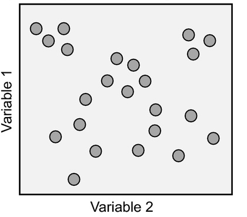
Supervised learning
Necessary dimension: Labelled data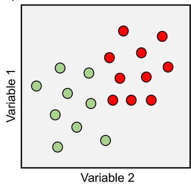
Supervised learning
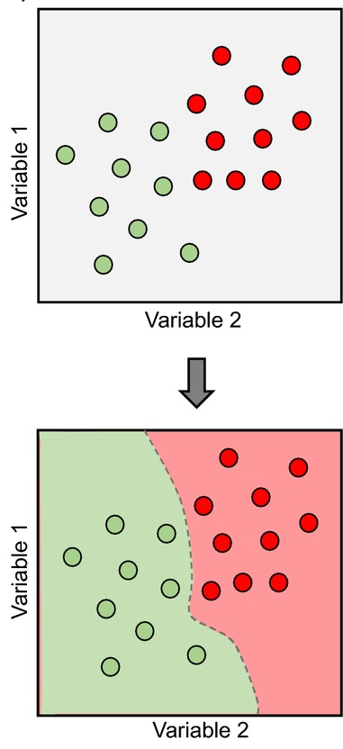
Unsupervised learning
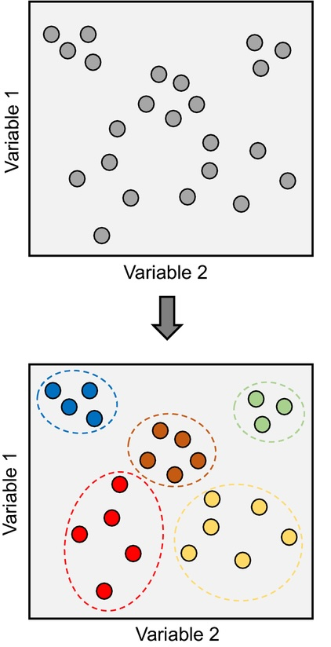
Other example
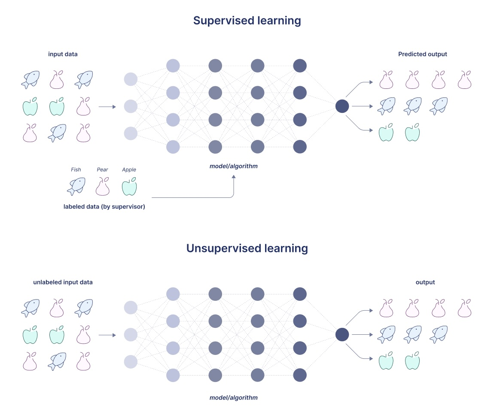
2.2 Workflow
- Problem Definition
- Data
- Collection
- Preparation
- missing values, encoding of categorical variables, etc.
- Exploration
- Feature engineering
- select and create suitable features for the predictions
- Split (see below)
- training vs evaluation
- Learning
- Model selection
- Training
- Evaluation
- Tuning
- Deployment
2.3 Bias-variance Trade-off
A (supervised) ML model faces a fundamental tension between bias and variance:
High Bias → Underfitting
- Model is too simple
- Misses important relationships
- Makes systematic mistakes
- Example: predicts same outcome for almost everyone
High Variance → Overfitting
- Model is too complex
- Learns noise and accidental patterns
- Excellent on training data, poor on unseen data
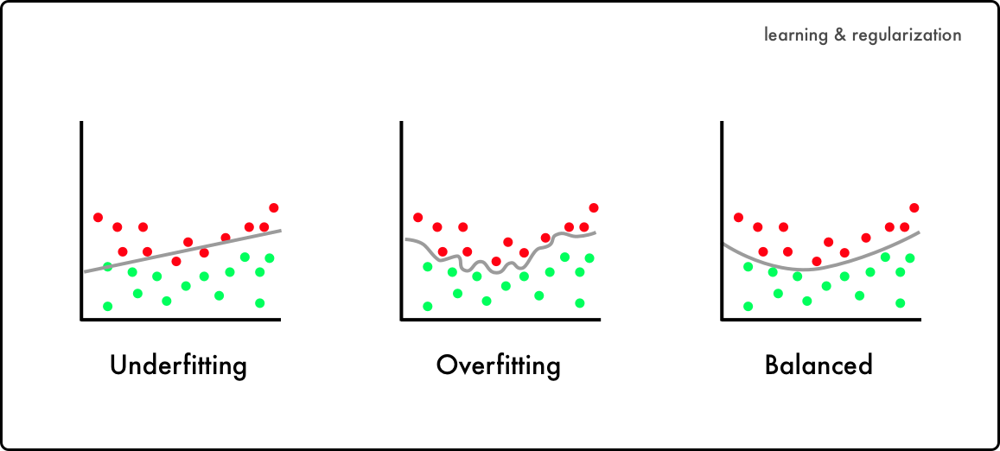
Challenge
Find the sweet spot where the model is flexible enough to capture real patterns but not so flexible that it memorizes noise.
Overfitting cannot be detected by looking only at training performance.
→ A model must be tested on unseen data to check whether it truly generalizes.
Sample Split
A sample split in machine learning involves dividing a dataset into separate subsets to train, validate, and test a model.
Why split data? - Evaluating Generalization: To test how the model performs on unseen data. - Preventing Overfitting: Ensures the model isn’t overly tailored to the training data. - Model Tuning: Provides a way to tune hyperparameters without bias from the training data.
(Mostly for supervised learning)
A Banking Example
Predicting Loan Defaults
A bank wants to build a credit-risk model to predict whether a loan applicant will default.
Collect historical data:
- Income, age, employment status
- Existing debts, credit history
- Loan characteristics
- Outcome: repaid / defaulted
The goal: approve good borrowers, decline risky ones.
Problem: Fitting in the Wild
Suppose the bank trains a model on all its historical data.
Model A — Overfitted - Learns every tiny detail - Memorizes noise and idiosyncratic cases - Example: - Learns that people with income = €54,371 and 3.2 years at job never defaulted - Perfect accuracy on past data - Terrible performance on new applicants - Leads to unexpected losses
Model B — Underfitted - Too simple (e.g., predicts “no default” for everyone) - Misses important risk patterns - Low predictive power - Misclassifies risks and rejects good customers
Core issue
Without proper evaluation:
- The bank cannot tell if the model is memorizing or generalizing
- High historical accuracy ≠ good future accuracy
Solution
Historical Data ──▶ 80% Training + 20% TestTraining Set: The model learns patterns and relationships from this data. - Purpose: Used to train the machine learning model. - Size: Typically 60-80% of the total data.
(skip)Validation Set: Helps with model selection and prevents overfitting by providing feedback during training. - Purpose: Used for tuning hyperparameters and evaluating the model during training. - Size: Usually 10-20% of the total data.
Test Set: Offers an unbiased assessment of model final performance on unseen data. - Purpose: Used for final evaluation after training and validation. - Size: Commonly 10-20% of the total data.
Splitting Techniques
- Random Split: Randomly divides data into training, validation, and test sets. Common for general purposes.
- Stratified Split: Ensures proportional representation of classes, useful for imbalanced datasets.
- Cross-Validation: Splits data into
kfolds and trains the modelktimes, each time using a different fold as the validation set.
Insights from splitting
| Model | Training Accuracy | Test Accuracy | Diagnosis |
|---|---|---|---|
| Model A | 99% | 68% | Overfitting detected → Model learned too much noise |
| Model B | 60% | 60% | Underfitting detected → Model missed structure |
| Model C | 85% | 83% | Balanced bias–variance trade-off → Suitable for deployment |
3. Unsupervised Learning
In unsupervised learning, machine learning algorithms discover insights from raw data without any further guidance.
One such algorithm is the k-means clustering algorithm which clusters a raw data set into a given number of subsets and assigns these subsets labels (cluster 0, cluster 1, etc.).
In the following: - Generate clustered data (unlabeled) - Introduce K-Means - Apply the ML workflow
3.1 Data
scikit-learn allows the creation of sample data sets for different types of ML problems.
The following uses the method make_blobs() to create a data set suited for k-means clustering.
Data set creation with 4 clusters
from sklearn.datasets import make_blobs
X, y = make_blobs(n_samples=250, centers=4,
random_state=500, cluster_std=1.25)
plt.figure(figsize = (10,6));
plt.scatter(X[:,0], X[:,1], s = 50);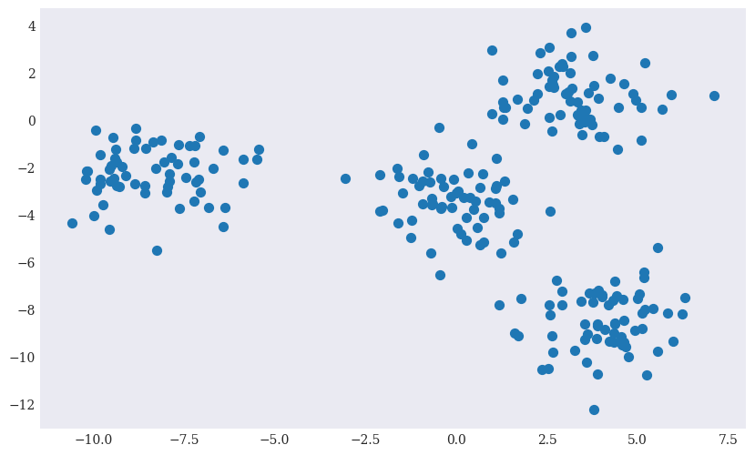
The goal of a clustering algorithm is therefore to recover the 4 clusters and properly classify each data point.
3.2. K-means clustering
A primer
K-Means is an unsupervised learning algorithm used for clustering data.
Goal: partition data into k distinct clusters based on similarities. - Each data point is assigned to the nearest cluster - Based on distance to the centroid \(\mu_k\) (the center of the cluster \(k\)). - The algorithm re-assigns clusters in order to minimize the inertia \(J\) - Sum of squared distances between points and their nearest cluster center.
\[ J = \sum_{k=1}^{K} \sum_{i \in C_k} \| x_i - \mu_k \|^2 \]
- Algorithm
- Initialization:
- Choose
Kinitial centroids randomly or using smarter methods (e.g., k-means++).
- Choose
- Assignment:
- Assign each data point to the nearest cluster centroid based on Euclidean distance.
- Update:
- Recalculate the centroids by finding the mean of all points assigned to each cluster.
- Repeat:
- Repeat the assignment and update steps until the centroids no longer change significantly (convergence).
- Output:
- Final centroids and cluster assignments for each point.
- Initialization:
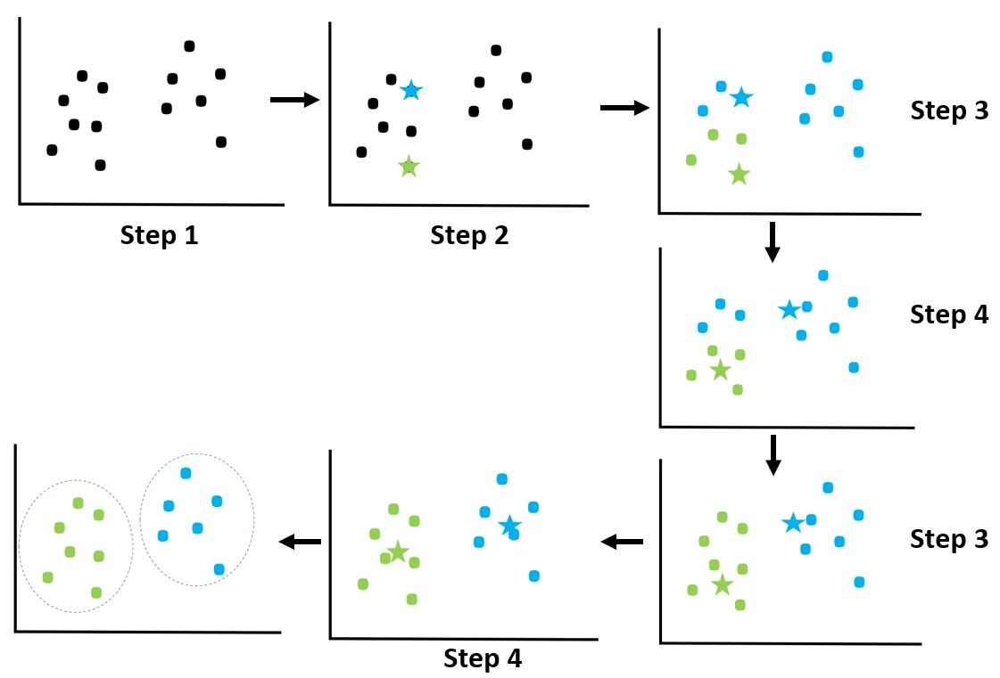
Workflow
Step 1 - Importing and instantiating the KMeans model class
The scikit-learn library contains a family class cluster with a subclass KMeans.
from sklearn.cluser import KMeans
model = KMeans (param)Parameters for the instantiation of a KMeans object: - n_clusters: Number of clusters to form. - random_state: Ensures reproducibility by fixing the random initialization of centroids. - max_iter: The maximum number of iterations to run the algorithm. - init: The method for initializing centroids (e.g., ‘random’, ‘k-means++’). - tol: The tolerance to declare convergence.
Step 2 - Fitting the model to the data
Fitting the model to the data obtains with the method .fit() with the data as input.
model.fit(X)This is where the optimization takes place.
Step 3 - Prediction
Predicting clusters obtains with the method .predict() with the data as input.
labels = model.predict(X)The method associates a cluster label to each data point.
Application
from sklearn.cluster import KMeans
model = KMeans (n_clusters = 4, random_state = 0)
model.fit(X)
y_kmeans = model.predict(X)fig, axes = plt.subplots(1, 2, figsize=(12, 6))
# Plot true values (y)
axes[0].scatter(X[:, 0], X[:, 1], c=y, cmap='coolwarm')
axes[0].set_title("True Labels (y)")
# Plot predicted values (y_kmeans)
axes[1].scatter(X[:, 0], X[:, 1], c=y_kmeans, cmap='Dark2')
axes[1].set_title("Predicted Labels (y_kmeans)");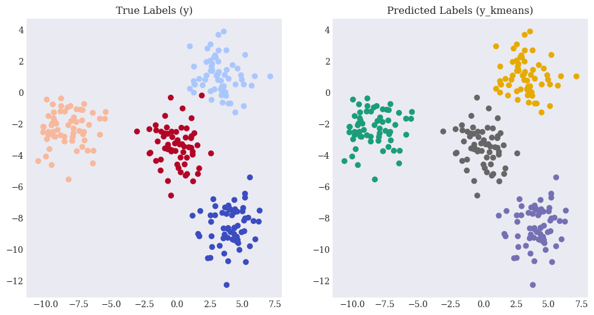
Step 4 - Parameter tuning (k)
Selecting the optimal number of k clusters is crucial for meaningful results.
Common techniques to determine K:
Elbow Method: Plot the inertia for different values of
Kand look for an “elbow” where the decrease in inertia slows down.Silhouette Score: Measures how similar a point is to its cluster compared to other clusters.
4. Supervised Learning
In supervised learning, machine learning is achieved with guidance in the form of known results or labelled data.
With unsupervised learning, algorithms originate their own categorical labels of clusters identified.
In supervised learning, labels are given.
Types of supervised learning algorithms
| Algorithm | Quick Description | Common Use Cases |
|---|---|---|
| Linear Regression | A model that fits a linear relationship | Predicting continuous values |
| Logistic Regression | A model for binary/multiclass classification | Binary/multiclass classification |
| Decision Trees | Tree-like structure for decision making | Easy-to-interpret models |
| Support Vector Machines | Finds the optimal boundary for classification | High-dimensional data |
| Random Forest | Ensemble of decision trees for better performance | Ensemble learning for robust predictions |
| Gradient Boosting | Combines weak models to form a strong model | Improving weak learners |
| Neural Networks | Mimics the human brain with layers of nodes | Complex patterns and non-linear relationships |
| Ridge/Lasso Regression | Linear models with regularization to prevent overfitting | Regularized linear models |
In the following:
Generate labelled data
Logistic regressions- Apply the ML workflow
- Performance evaluation
Decision trees- Apply the ML workflow
- With sample split
4.1 Data
scikit-learn allows the creation of sample data sets for supervised ML problems.
The following uses the method make_classification() to create a sample data set suited to illustrating classification techniques.
Data set creation with 2 classes and 20 features
from sklearn.datasets import make_classification
n_samples = 10000
X, y = make_classification(n_samples=n_samples, n_features=20,
n_informative=20, n_redundant=0,
n_repeated=0, random_state=250)fig = plt.figure(figsize = (10,6))
ax = fig.add_subplot(111, projection='3d')
ax.scatter(X[:, 0], X[:, 1], X[:, 2], c=y, cmap='coolwarm', marker='o');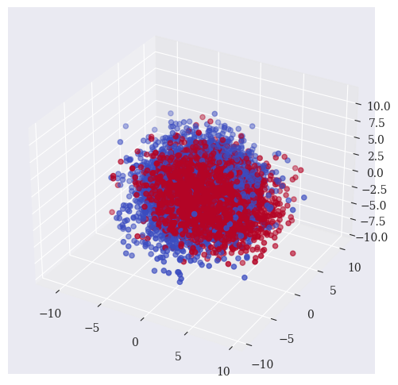
The goal of a classification algorithm is therefore to classify each 20-dimensional data point according to the binary value y.
4.2 Logistic regression
A primer
Logistic regressions model the probability of a particular class, using the logistic function (also known as the sigmoid function).
- Linear Regression: Predicts a continuous output (regression tasks).
- Logistic Regression: Predicts the probability of categorical outcomes (classification tasks).
The output is a probability value between 0 and 1, which is then used to classify data into different classes (e.g., true/false).
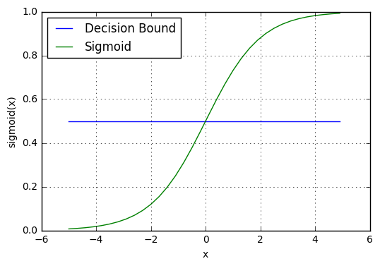
Workflow
Step 1 - Importing and instantiating the Logistic model class
The scikit-learn library contains a family class linear_model with a subclass LogisticRegression.
from sklearn.linear_model import LogisticRegression
model = LogisticRegression(param)Step 2 - Fitting the model to the data
Fitting the model to the data obtains with the method .fit() with the data and label as input.
model.fit(X,y)This is where the optimization takes place.
Step 3 - Prediction
Predicting labels obtains with the method .predict with the data as input.
pred = model.predict(X)The method associates a prediction output to each data point.
Application
from sklearn.linear_model import LogisticRegression
# model = LogisticRegression(C = 1, solver = 'lbfgs')
model = LogisticRegression()
model.fit(X,y)
pred = model.predict(X)Step 4 - Evaluation
Xc = X[y == pred]
Xf = X[y != pred]plt.figure(figsize=(10, 6))
plt.scatter(x=Xc[:, 0], y=Xc[:, 1], c=y[y == pred],
marker='o', cmap='coolwarm')
plt.scatter(x=Xf[:, 0], y=Xf[:, 1], c=y[y != pred],
marker='x', cmap='coolwarm');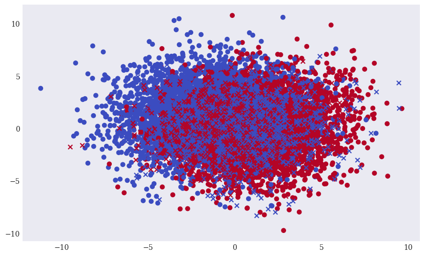
Given the prediction of the model, there are several ways to assess the performance of the model.
Confusion matrix
| Actual Predicted | Positive Prediction | Negative Prediction |
|---|---|---|
| Positive | True Positive (TP) | False Negative (FN) |
| Negative | False Positive (FP) | True Negative (TN) |
Performance metrics - Accuracy: The ratio of correct predictions to total predictions. \[ \text{Accuracy} = \frac{TP + TN}{TP + TN + FP + FN} \] - Precision: The ratio of true positives to predicted positives. \[ \text{Precision} = \frac{TP}{TP + FP} \] - Recall: The ratio of true positives to actual positives. \[ \text{Recall} = \frac{TP}{TP + FN} \]
- F1 Score: The harmonic mean of precision and recall, providing a single measure that balances both.
\[ F1 = 2 \times \frac{\text{Precision} \times \text{Recall}}{\text{Precision} + \text{Recall}} \]
from sklearn.metrics import accuracy_score, precision_score, recall_score, f1_score
accuracy = accuracy_score(y, pred)
precision = precision_score(y, pred)
recall = recall_score(y, pred)
f1 = f1_score(y, pred)
print(f"Accuracy: {accuracy:.2f}")
print(f"Precision: {precision:.2f}")
print(f"Recall: {recall:.2f}")
print(f"F1 Score: {f1:.2f}")Accuracy: 0.85
Precision: 0.84
Recall: 0.88
F1 Score: 0.864.3 Decision trees
A primer
Decision trees model predictions as a tree-like structure, where:
- Internal nodes represent a feature or attribute on which the data is split.
- Branches represent the outcome of the decision based on that feature.
- Leaf nodes represent the final output or class label.
Decision trees are easy to interpret and can handle both numerical and categorical data.
Example of a trained decision tree (depth = 3)
(Root) Credit Score >= 650?
/ \
Yes No
Income >= 3000? Default: Deny
/ \
Yes No
Loan Amount <= 20000? Default: Deny
/ \
Yes No
No-Default: Approve Default: DenyThe issue of overfitting
With enough depth, a decision tree can fit any data.
→ Need to split data before engaging in training.
Workflow
Step 1 - Train-test split data
Recall: data needs to be split in 2 parts: 1. Training Set: Used to train the model (70-80% of the data) 3. Test Set: Used to evaluate the model’s performance (20-30% of the data)
The scikit-learn library contains a family class model_selection with a subclass train_test_split.
from sklearn.model_selection import train_test_split
X_train, X_test, y_train, y_test = train_test_split(X, y, test_size=0.2)Parameters in train_test_split
test_size: Specifies the proportion of the dataset to include in the test split. For example,test_size=0.2means 20% of the data will be used as the test set.random_state: Controls the shuffling of data before splitting. A fixedrandom_stateensures reproducibility, meaning the same split will be produced each time.shuffle: By default, the data is shuffled before splitting to ensure a random distribution between training and test sets.
Step 2 - Importing and instantiating the DecisionTree model class
The scikit-learn library contains a family class tree with a subclass DecisionTreeClassifier.
from sklearn.tree import DecisionTreeClassifier
model = DecisionTreeClassifier(param)With parameters: - max_depth: The maximum depth of the tree. Limiting depth prevents overfitting. - min_samples_split: The minimum number of samples required to split an internal node. - min_samples_leaf: The minimum number of samples required to be in a leaf node. - criterion: The function used to measure the quality of a split (e.g., gini for Gini impurity or entropy for information gain in classification, mse for regression). - max_features: The number of features to consider when looking for the best split.
Step 3 - Fitting the model to data
Fitting the model to the data obtains with the method .fit() with the training data and label as input.
model.fit(X_train,y_train)This is where the optimization takes place.
Step 4 - Prediction
Predicting clusters obtains with the method .predict() with the test data as input.
y_pred = model.predict_proba(X_test)The method associates an output prediction to each data point in the test set.
Application
from sklearn.model_selection import train_test_split
X_train, X_test, y_train, y_test = train_test_split(X, y, test_size=0.2, random_state=42)
# Output the sizes of the training and test sets
print(f"Training set size: {X_train.shape}")
print(f"Test set size: {X_test.shape}")Training set size: (8000, 20)
Test set size: (2000, 20)Starting with depth = 1
from sklearn.tree import DecisionTreeClassifier
model = DecisionTreeClassifier(max_depth=1)model.fit(X_train,y_train)DecisionTreeClassifier(max_depth=1)In a Jupyter environment, please rerun this cell to show the HTML representation or trust the notebook.
On GitHub, the HTML representation is unable to render, please try loading this page with nbviewer.org.
DecisionTreeClassifier(max_depth=1)
y_pred = model.predict(X_test)Step 5 - Evaluation
from sklearn.metrics import accuracy_score, precision_score, recall_score, f1_score
accuracy = accuracy_score(y_test,y_pred)
precision = precision_score(y_test,y_pred)
recall = recall_score(y_test,y_pred)
f1 = f1_score(y_test,y_pred)
print(f"Accuracy: {accuracy:.2f}")
print(f"Precision: {precision:.2f}")
print(f"Recall: {recall:.2f}")
print(f"F1 Score: {f1:.2f}")Accuracy: 0.65
Precision: 0.65
Recall: 0.69
F1 Score: 0.67Xc = X_test[y_test == y_pred]
Xf = X_test[y_test != y_pred]plt.figure(figsize=(10, 6))
plt.scatter(x=Xc[:, 0], y=Xc[:, 1], c=y_test[y_test == y_pred],
marker='o', cmap='coolwarm')
plt.scatter(x=Xf[:, 0], y=Xf[:, 1], c=y_test[y_test != y_pred],
marker='x', cmap='coolwarm');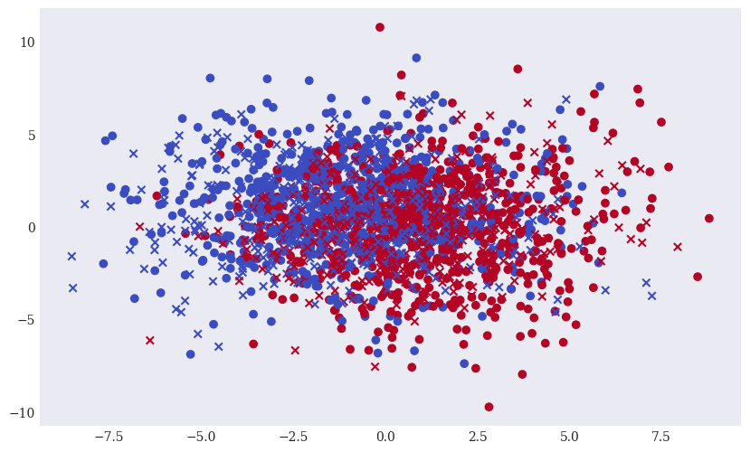
Increasing maximum depth
with training
print('{:>8s} | {:10s} | {:10s} | {:10s} | {:10s}'.format('depth', 'accuracy', 'precision', 'recall', 'f1'))
print(60 * '-')
for depth in range(1, 20):
model = DecisionTreeClassifier(max_depth=depth)
model.fit(X_train, y_train)
acc = accuracy_score(y_test, model.predict(X_test))
# accuracy = accuracy_score(y_test,y_pred)
prec = precision_score(y_test,model.predict(X_test))
rec = recall_score(y_test,model.predict(X_test))
f1 = f1_score(y_test,model.predict(X_test))
print('{:8d} | {:10.2f} | {:10.2f} | {:10.2f} | {:10.2f}'.format(depth, acc, prec, rec, f1)) depth | accuracy | precision | recall | f1
------------------------------------------------------------
1 | 0.65 | 0.65 | 0.69 | 0.67
2 | 0.73 | 0.72 | 0.78 | 0.75
3 | 0.75 | 0.74 | 0.80 | 0.77
4 | 0.78 | 0.81 | 0.73 | 0.77
5 | 0.81 | 0.83 | 0.80 | 0.81
6 | 0.84 | 0.85 | 0.82 | 0.84
7 | 0.84 | 0.86 | 0.81 | 0.84
8 | 0.85 | 0.85 | 0.86 | 0.85
9 | 0.85 | 0.85 | 0.86 | 0.86
10 | 0.85 | 0.86 | 0.85 | 0.85
11 | 0.85 | 0.86 | 0.84 | 0.85
12 | 0.86 | 0.87 | 0.85 | 0.86
13 | 0.85 | 0.86 | 0.84 | 0.85
14 | 0.85 | 0.86 | 0.84 | 0.85
15 | 0.85 | 0.86 | 0.84 | 0.85
16 | 0.85 | 0.86 | 0.84 | 0.85
17 | 0.84 | 0.85 | 0.83 | 0.84
18 | 0.85 | 0.86 | 0.83 | 0.85
19 | 0.85 | 0.86 | 0.84 | 0.85with overfitting
print('{:>8s} | {:10s} | {:10s} | {:10s} | {:10s}'.format('depth', 'accuracy', 'precision', 'recall', 'f1'))
print(60 * '-')
for depth in range(1, 20):
model = DecisionTreeClassifier(max_depth=depth)
model.fit(X, y)
acc = accuracy_score(y, model.predict(X))
# accuracy = accuracy_score(y_test,y_pred)
prec = precision_score(y,model.predict(X))
rec = recall_score(y,model.predict(X))
f1 = f1_score(y,model.predict(X))
print('{:8d} | {:10.2f} | {:10.2f} | {:10.2f} | {:10.2f}'.format(depth, acc, prec, rec, f1)) depth | accuracy | precision | recall | f1
------------------------------------------------------------
1 | 0.67 | 0.66 | 0.71 | 0.68
2 | 0.73 | 0.71 | 0.78 | 0.74
3 | 0.76 | 0.73 | 0.80 | 0.77
4 | 0.79 | 0.80 | 0.76 | 0.78
5 | 0.82 | 0.84 | 0.81 | 0.82
6 | 0.86 | 0.86 | 0.85 | 0.86
7 | 0.88 | 0.90 | 0.86 | 0.88
8 | 0.91 | 0.90 | 0.92 | 0.91
9 | 0.93 | 0.93 | 0.93 | 0.93
10 | 0.94 | 0.94 | 0.95 | 0.94
11 | 0.96 | 0.96 | 0.96 | 0.96
12 | 0.97 | 0.97 | 0.97 | 0.97
13 | 0.98 | 0.98 | 0.98 | 0.98
14 | 0.99 | 0.99 | 0.99 | 0.99
15 | 0.99 | 0.99 | 0.99 | 0.99
16 | 1.00 | 1.00 | 1.00 | 1.00
17 | 1.00 | 1.00 | 1.00 | 1.00
18 | 1.00 | 1.00 | 1.00 | 1.00
19 | 1.00 | 1.00 | 1.00 | 1.00Some applications in Finance
Credit card fraud
It is important that credit card companies are able to recognize fraudulent credit card transactions so that customers are not charged for items that they did not purchase.
In this example, we’ll use a decision tree classifier to detect fraudulent credit card transactions.
The target variable is Class, where 0 indicates non-fraudulent transactions, and 1 indicates fraudulent transactions.
Data
- The dataset contains transactions made by credit cards in September 2013 by European cardholders.
- This dataset presents transactions that occurred in two days, where we have 492 frauds out of 284,807 transactions.
- The dataset is highly unbalanced, the positive class (frauds) account for 0.172% of all transactions.
- Due to confidentiality issues, it contains only numerical input variables which are the result of a PCA transformation.
- The only features which have not been transformed with PCA are ‘Time’ and ‘Amount’.
- Feature ‘Time’ contains the seconds elapsed between each transaction and the first transaction in the dataset.
- The feature ‘Amount’ is the transaction Amount.
- Feature ‘Class’ is the response variable and it takes value 1 in case of fraud and 0 otherwise.
Step 1: Import Required Libraries
import pandas as pd
from sklearn.model_selection import train_test_split
from sklearn.tree import DecisionTreeClassifier
from sklearn.metrics import accuracy_score, classification_report, confusion_matrix
import matplotlib.pyplot as plt
from sklearn.tree import plot_treeStep 2: Import and prepare the Data
df = pd.read_csv('Data/13/creditcard.csv')df.info()<class 'pandas.core.frame.DataFrame'>
RangeIndex: 284807 entries, 0 to 284806
Data columns (total 31 columns):
# Column Non-Null Count Dtype
--- ------ -------------- -----
0 Time 284807 non-null float64
1 V1 284807 non-null float64
2 V2 284807 non-null float64
3 V3 284807 non-null float64
4 V4 284807 non-null float64
5 V5 284807 non-null float64
6 V6 284807 non-null float64
7 V7 284807 non-null float64
8 V8 284807 non-null float64
9 V9 284807 non-null float64
10 V10 284807 non-null float64
11 V11 284807 non-null float64
12 V12 284807 non-null float64
13 V13 284807 non-null float64
14 V14 284807 non-null float64
15 V15 284807 non-null float64
16 V16 284807 non-null float64
17 V17 284807 non-null float64
18 V18 284807 non-null float64
19 V19 284807 non-null float64
20 V20 284807 non-null float64
21 V21 284807 non-null float64
22 V22 284807 non-null float64
23 V23 284807 non-null float64
24 V24 284807 non-null float64
25 V25 284807 non-null float64
26 V26 284807 non-null float64
27 V27 284807 non-null float64
28 V28 284807 non-null float64
29 Amount 284807 non-null float64
30 Class 284807 non-null int64
dtypes: float64(30), int64(1)
memory usage: 67.4 MBdf.head()| Time | V1 | V2 | V3 | V4 | V5 | V6 | V7 | V8 | V9 | ... | V21 | V22 | V23 | V24 | V25 | V26 | V27 | V28 | Amount | Class | |
|---|---|---|---|---|---|---|---|---|---|---|---|---|---|---|---|---|---|---|---|---|---|
| 0 | 0.0 | -1.359807 | -0.072781 | 2.536347 | 1.378155 | -0.338321 | 0.462388 | 0.239599 | 0.098698 | 0.363787 | ... | -0.018307 | 0.277838 | -0.110474 | 0.066928 | 0.128539 | -0.189115 | 0.133558 | -0.021053 | 149.62 | 0 |
| 1 | 0.0 | 1.191857 | 0.266151 | 0.166480 | 0.448154 | 0.060018 | -0.082361 | -0.078803 | 0.085102 | -0.255425 | ... | -0.225775 | -0.638672 | 0.101288 | -0.339846 | 0.167170 | 0.125895 | -0.008983 | 0.014724 | 2.69 | 0 |
| 2 | 1.0 | -1.358354 | -1.340163 | 1.773209 | 0.379780 | -0.503198 | 1.800499 | 0.791461 | 0.247676 | -1.514654 | ... | 0.247998 | 0.771679 | 0.909412 | -0.689281 | -0.327642 | -0.139097 | -0.055353 | -0.059752 | 378.66 | 0 |
| 3 | 1.0 | -0.966272 | -0.185226 | 1.792993 | -0.863291 | -0.010309 | 1.247203 | 0.237609 | 0.377436 | -1.387024 | ... | -0.108300 | 0.005274 | -0.190321 | -1.175575 | 0.647376 | -0.221929 | 0.062723 | 0.061458 | 123.50 | 0 |
| 4 | 2.0 | -1.158233 | 0.877737 | 1.548718 | 0.403034 | -0.407193 | 0.095921 | 0.592941 | -0.270533 | 0.817739 | ... | -0.009431 | 0.798278 | -0.137458 | 0.141267 | -0.206010 | 0.502292 | 0.219422 | 0.215153 | 69.99 | 0 |
5 rows × 31 columns
Decompose input and label data
X = df.drop(columns=['Class'])
y = df['Class']Step 3: Split the Data
To evaluate the model, split the data into training and testing sets.
# Split data into training and testing sets
X_train, X_test, y_train, y_test = train_test_split(X, y, test_size=0.2, random_state=42)Step 4: Train the Decision Tree Model
Initialize and train the decision tree classifier.
# Initialize the decision tree classifier
clf = DecisionTreeClassifier(max_depth=4, random_state=42)
# Train the classifier
clf.fit(X_train, y_train)DecisionTreeClassifier(max_depth=4, random_state=42)In a Jupyter environment, please rerun this cell to show the HTML representation or trust the notebook.
On GitHub, the HTML representation is unable to render, please try loading this page with nbviewer.org.
DecisionTreeClassifier(max_depth=4, random_state=42)
Step 5: Make Predictions
Use the trained model to predict fraud on the test set.
# Predict on the test set
y_pred = clf.predict(X_test)Step 6: Evaluate the Model
Assess the model’s performance using accuracy, confusion matrix, and classification report.
# Accuracy
accuracy = accuracy_score(y_test, y_pred)
print("Accuracy:", accuracy)
# Confusion Matrix
print("Confusion Matrix:")
print(confusion_matrix(y_test, y_pred))
# Classification Report
print("Classification Report:")
print(classification_report(y_test, y_pred))Accuracy: 0.999420666409185
Confusion Matrix:
[[56849 15]
[ 18 80]]
Classification Report:
precision recall f1-score support
0 1.00 1.00 1.00 56864
1 0.84 0.82 0.83 98
accuracy 1.00 56962
macro avg 0.92 0.91 0.91 56962
weighted avg 1.00 1.00 1.00 56962
Step 7: Visualize the Decision Tree
Plotting the tree helps in understanding the decisions being made by the model.
plt.figure(figsize=(16, 10))
plot_tree(clf, feature_names=X.columns, class_names=["Non-Fraud", "Fraud"], filled=True)
plt.show()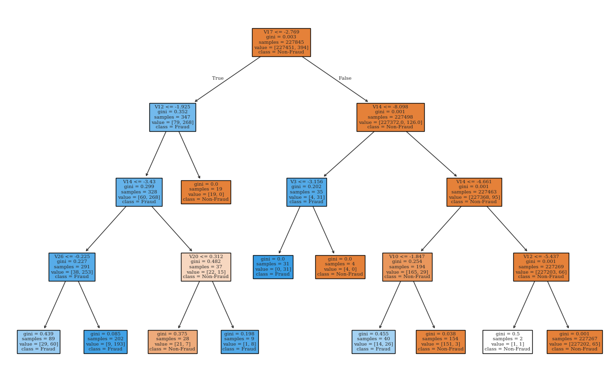
Anomaly detection
Exercise : Code interpreation with the following information
- Data set:
Binance_Data.csv
file_path = 'Data/13/Binance_Data.csv'
df = pd.read_csv(file_path)- Machine learning method: K-Means and Scaler
from sklearn.cluster import KMeans
from sklearn.preprocessing import StandardScaler
StandardScaleris a preprocessing tool from thesklearn.preprocessingmodule in theScikit-Learnlibrary. It’s used to standardize or normalize data, which means scaling the features so that they have a mean of zero and a standard deviation of one. This is commonly done to improve the performance of machine learning models, especially those sensitive to the scale of input data, like K-Means clustering, logistic regression, and neural networks.
df.info()<class 'pandas.core.frame.DataFrame'>
RangeIndex: 1000 entries, 0 to 999
Data columns (total 18 columns):
# Column Non-Null Count Dtype
--- ------ -------------- -----
0 timestamp 1000 non-null object
1 datetime 1000 non-null object
2 open 1000 non-null float64
3 high 1000 non-null float64
4 low 1000 non-null float64
5 close 1000 non-null float64
6 volume 1000 non-null float64
7 year 1000 non-null int64
8 month 1000 non-null int64
9 day 1000 non-null int64
10 day_of_week 1000 non-null int64
11 hour 1000 non-null int64
12 close_lag_1 1000 non-null float64
13 close_lag_2 1000 non-null float64
14 close_lag_3 1000 non-null float64
15 volume_lag_1 1000 non-null float64
16 volume_lag_2 1000 non-null float64
17 volume_lag_3 1000 non-null float64
dtypes: float64(11), int64(5), object(2)
memory usage: 140.8+ KBdf.describe()| open | high | low | close | volume | year | month | day | day_of_week | hour | close_lag_1 | close_lag_2 | close_lag_3 | volume_lag_1 | volume_lag_2 | volume_lag_3 | |
|---|---|---|---|---|---|---|---|---|---|---|---|---|---|---|---|---|
| count | 1000.000000 | 1000.000000 | 1000.000000 | 1000.000000 | 1000.000000 | 1000.0 | 1000.0 | 1000.000000 | 1000.000000 | 1000.000000 | 1000.000000 | 1000.000000 | 1000.000000 | 1000.000000 | 1000.000000 | 1000.000000 |
| mean | 0.381544 | 0.361754 | 0.392182 | 0.382187 | 0.016678 | 2024.0 | 7.0 | 9.516000 | 1.516000 | 11.388000 | 0.381549 | 0.380906 | 0.380243 | 0.016677 | 0.016671 | 0.016657 |
| std | 0.290476 | 0.279328 | 0.280658 | 0.290416 | 0.038731 | 0.0 | 0.0 | 0.499994 | 0.499994 | 8.186848 | 0.290464 | 0.290506 | 0.290523 | 0.038731 | 0.038732 | 0.038734 |
| min | 0.000000 | 0.000000 | 0.000000 | 0.000000 | 0.000000 | 2024.0 | 7.0 | 9.000000 | 1.000000 | 0.000000 | 0.000000 | 0.000000 | 0.000000 | 0.000000 | 0.000000 | 0.000000 |
| 25% | 0.185062 | 0.174213 | 0.202424 | 0.185124 | 0.005342 | 2024.0 | 7.0 | 9.000000 | 1.000000 | 4.000000 | 0.185057 | 0.184746 | 0.184315 | 0.005317 | 0.005305 | 0.005291 |
| 50% | 0.261445 | 0.244322 | 0.278768 | 0.261587 | 0.009631 | 2024.0 | 7.0 | 10.000000 | 2.000000 | 8.000000 | 0.261443 | 0.261291 | 0.261169 | 0.009631 | 0.009585 | 0.009548 |
| 75% | 0.692634 | 0.664926 | 0.686385 | 0.692631 | 0.017063 | 2024.0 | 7.0 | 10.000000 | 2.000000 | 19.000000 | 0.692631 | 0.692631 | 0.692068 | 0.017063 | 0.017063 | 0.016997 |
| max | 1.000000 | 1.000000 | 1.000000 | 1.000000 | 1.000000 | 2024.0 | 7.0 | 10.000000 | 2.000000 | 23.000000 | 1.000000 | 1.000000 | 1.000000 | 1.000000 | 1.000000 | 1.000000 |
Interpret the following code
df['Close_Price_Change'] = df['close'].pct_change().fillna(0) * 100
df['Volatility'] = df['high'] - df['low']
data_for_clustering = df[['volume', 'Close_Price_Change', 'Volatility']].replace([np.inf, -np.inf], np.nan).dropna()
scaler = StandardScaler()
data_scaled = scaler.fit_transform(data_for_clustering)
kmeans = KMeans(n_clusters=5, random_state=0)
data_for_clustering['Cluster'] = kmeans.fit_predict(data_scaled)
data_for_clustering['Distance_to_Center'] = np.linalg.norm(data_scaled - kmeans.cluster_centers_[data_for_clustering['Cluster']], axis=1)
threshold = data_for_clustering['Distance_to_Center'].quantile(0.95)
data_for_clustering['Anomaly'] = data_for_clustering['Distance_to_Center'] > threshold
data_for_clustering.head(10)| volume | Close_Price_Change | Volatility | Cluster | Distance_to_Center | Anomaly | |
|---|---|---|---|---|---|---|
| 0 | 0.005119 | 0.000000 | -0.035679 | 1 | 0.161866 | False |
| 1 | 0.004273 | -30.841352 | -0.035655 | 0 | 1.794493 | True |
| 2 | 0.072361 | 90.545844 | -0.014283 | 4 | 3.049216 | True |
| 3 | 0.018940 | -4.343756 | -0.036998 | 1 | 0.420190 | False |
| 4 | 0.024734 | 12.321394 | -0.028574 | 1 | 0.912231 | False |
| 5 | 0.012141 | 11.806221 | -0.040566 | 1 | 0.685271 | False |
| 6 | 0.042371 | 13.567643 | -0.010533 | 0 | 1.539356 | False |
| 7 | 0.020318 | -40.520140 | -0.017741 | 0 | 1.910051 | True |
| 8 | 0.018252 | -17.247347 | -0.031735 | 0 | 1.018215 | False |
| 9 | 0.014233 | 4.781821 | -0.040405 | 1 | 0.305875 | False |